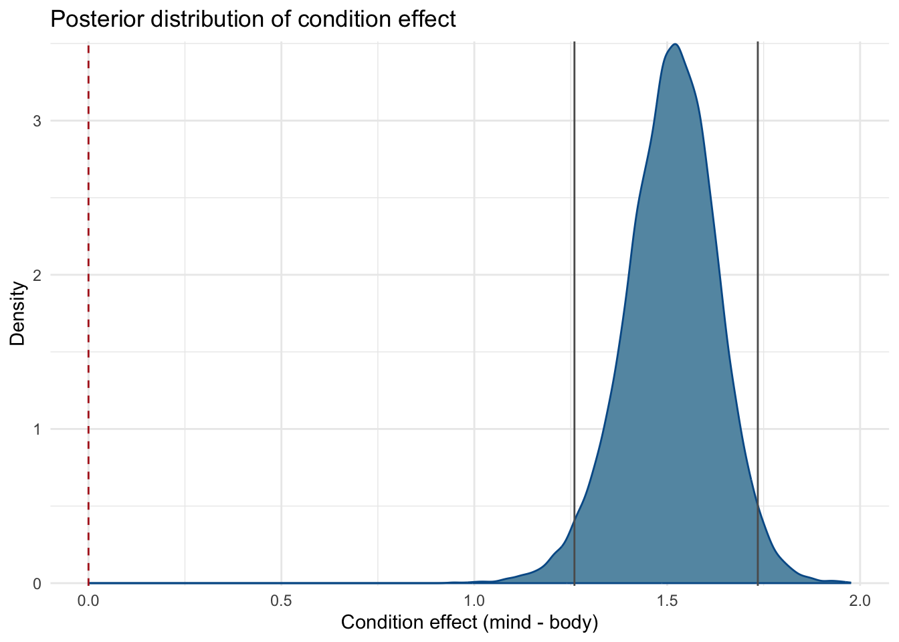
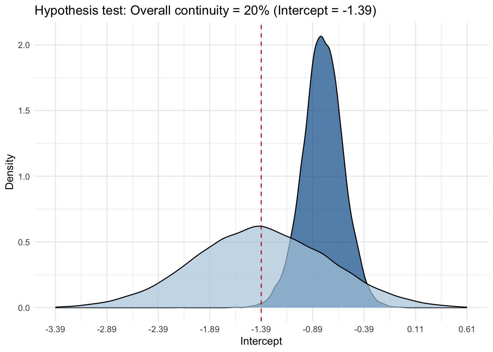

Disclaimer: This is a draft version of the tutorial. Please let me know about any mistakes (and excuse any typos).
There are 3 main ways to do hypothesis testing in the framework we learned, that is Bayesian modeling using brms and Stan:
check if zero is included in the credible interval of a given parameter
benefit: easy, does not require extra steps
downside: does not quantify the evidence in favor of the hypothesis, only gives a binary decision.
compute a Bayes factor for a given parameter using the Savage-Dickey density ratio method. That is the posterior density at the point of interest divided by the prior density at that point. Values greater than one indicate that evidence in favor of the point hypothesis has increased after seeing the data.
benefit: easy to compute, give an quantification of the evidence ratio, does not require additional computation
downside: only works for single parameters.
compute a Bayes factor using model comparison with bridgesampling. This uses the marginal likelihood, which is an indication of model fit. It favors well-fitting models, but also penalizes model complexity (Occam’s razor: simplicity)
benefit: very flexible, also for multiple parameters, such as random effects, give an quantification of the evidence ratio
downside: requires many posterior samples (iterations) and extra computation
Important considerations when using method 2 or 3 (Bayes factors):
use (weakly) informative prior that are at least sensible in the context of the data (checked with prior predictions). Flat/improper priors do not work.
use many iterations for stable results in computing the marginal likelihood (~10 times more than for estimation)
add save_pars = save_pars(all = TRUE) to the model fitting function to save all parameters, including the marginal likelihood (log-marginal-likelihood) for each iteration. This is necessary for computing the Bayes factor with bridgesampling.
Example: afterlife beliefs and mind-body dualism
Let’s look at all three options, using a subset of the data from Hoogeveen et al. (2023). It is about cross-cultural variation in afterlife beliefs and mind-body dualism: idea that high-level mental processes (e.g., love) continue after physical death, whereas bodily processes (e.g., hunger) cease. The original data consists of 10195 subjects from 24 countries, who each provided 6 continuation ratings (i.e., 61170 observations). Specifically, responses were tabulated as x out of 3 ‘yes, continues’ responses in the body-condition (hunger, working brains, hearing) and x out of 3 ‘yes, continues’ responses in the mind-condition (love, knowledge, desire). In the example here, we use a subset of the data with \(60\) subjects across \(10\) countries.
Consider the following hypotheses:
\(\mathcal{H1}\): continuity judgments of states after biological death are more likely for mental states than bodily states.
\(\mathcal{H2}\): overall continuity is around 20% on average (as indicated by previous studies).
\(\mathcal{H3}\): the difference between mental and bodily continuation differs across countries.
Show the code
# the data is a subset of the full cross-cultural dataset on afterlife beliefs# and mind-body dualism dat <-read.csv("afterlife_beliefs.csv")head(dat)
country subject resp cat condition site
1 Belgium 468 2 -0.5 body 1
2 Belgium 468 3 0.5 mind 1
3 Belgium 473 1 -0.5 body 1
4 Belgium 473 3 0.5 mind 1
5 Belgium 475 2 -0.5 body 1
6 Belgium 475 2 0.5 mind 1
ci <-as.numeric(summary(fit_m1)$fixed[2, c("l-95% CI", "u-95% CI")])mcmc_plot(fit_m1, type="dens", variable ="b_cat") +ggtitle("Posterior distribution of condition effect") +theme_minimal() +xlab("Condition effect (mind - body)") +ylab("Density") +geom_vline(xintercept =0, linetype ="dashed", color ="firebrick") +geom_vline(xintercept = ci, linetype ="solid", color ="grey36") +scale_x_continuous(breaks =seq(-1, 2, by =0.5)) +theme(legend.position="none")
Scale for x is already present.
Adding another scale for x, which will replace the existing scale.

We can conclude that, clearly, the data provide evidence in favor of \(\mathcal{H1}\), as the 95% credible interval does not include zero. However, we can’t quantify the strength of this evidence, as we don’t know how likely the data would be under the null hypothesis.
2. Savage-Dickey density ratio
To quantify the evidence in favor of \(\mathcal{H1}\) versus an alternative hypothesis, such as a null-hypothesis, we can compute the Bayes factor using the Savage-Dickey density ratio method. This method computes the posterior density at the point of interest (in this case, zero) and divides it by the prior density at that point. Note again that for this method, it’s important to set a sensible prior. Typically, if you want to test against a null-hypothesis, you would use a weakly informative prior centered around zero. Let’s also do that now, using a N(0,1) prior for the condition effect.
Show the code
hyp1 <- brms::hypothesis(fit_m3, "cat > 0")hyp1
Hypothesis Tests for class b:
Hypothesis Estimate Est.Error CI.Lower CI.Upper Evid.Ratio Post.Prob Star
1 (cat) > 0 1.53 0.12 1.33 1.73 Inf 1 *
---
'CI': 90%-CI for one-sided and 95%-CI for two-sided hypotheses.
'*': For one-sided hypotheses, the posterior probability exceeds 95%;
for two-sided hypotheses, the value tested against lies outside the 95%-CI.
Posterior probabilities of point hypotheses assume equal prior probabilities.
Here, we get a Bayes factor (Evid.Ratio) of infinity, which means that all posterior draws are indeed larger than zero, indicating that the data provide strong evidence in favor of \(\mathcal{H1}\). Rather than infinity, we should read this is \(\text{BF}_{10} > 20000\), as we have 20000 posterior samples, all of which are larger than zero.
We don’t need to test against a null-hypothesis per se, we can also test, say, whether the intercept is indeed at 20% continuity (\(\mathcal{H2}\)), as suggested by previous studies. Remember that 20% continuity corresponds to a logit value of -1.39 (through the transformation log(p / (1 - p)) with p = 0.2). Note that in order to get the Savage-Dickey density ratio for the intercept, we need to specify the intercept as a regression term in the model formula: 0 + Intercept + cat instead of 1 + cat.
Show the code
# is the overall continuity indeed at 20% as suggested in previous studies? hyp2 <- brms::hypothesis(fit_m3, "Intercept = -1.39")p2 <-plot(hyp2, plot=FALSE)[[1]]p2 +ggtitle("Hypothesis test: Overall continuity = 20% (Intercept = -1.39)") +theme_minimal() +xlab("Intercept") +ylab("Density") +geom_vline(xintercept =0, linetype ="dashed", color ="firebrick") +scale_x_continuous(breaks =seq(-2, 2, by =0.5), labels =seq(-2, 2, by =0.5)-1.39, limits =c(-2,2)) +#note the -1.39 in the labels, so better show the value we're testing. In the plot, this is automatically set to 0 as it takes the difference. theme(legend.position="none", strip.text =element_blank())

The results show that the data show evidence against the hypothesis that the intercept is at 20% (i.e., -1.39 on the logit scale), as \(\text{BF}_{01} = 0.054\), \(\text{BF}_{10} = 18.456\) (recall that \(\text{BF}_{01} = 1/\text{BF}_{10}\)), indicating that the data provide moderate to strong evidence against this hypothesis. (The posterior suggests the intercept is higher than this 20%).
3. Model comparison
The third option is to compare two models that differ in one specific aspect of interest. Imagine that we want to evaluate the evidence in the data for the inclusion of a random effect of condition (\(\mathcal{H3}\)); that is, is the difference between the body and mind condition different across countries? To do this, we can compare the model with a random effect of condition (\(\mathcal{M_1}\)) to a model without a random effect of condition (\(\mathcal{M_2}\)). We can then compute the Bayes factor (BF) to quantify the evidence in the data for \(\mathcal{M_1}\) compared to \(\mathcal{M_2}\).
First we can look at posterior predictions for the model that includes random effects of condition.
With both models being estimated (and all parameters sampled), we can use bridge sampling to estimate the marginal likelihood (Gronau, Singmann, and Wagenmakers 2020). This serves as the basis for the computing Bayes factors and posterior model probabilities. For this purpose, brms comes with built-in methods that make use of the bridgesampling package (Gronau, Singmann, and Wagenmakers 2020).
We can now computing the Bayes factor of model1 against model2 via bayes_factor(model1, model2).
The Bayes factor \(\text{BF}_{12}\) quantifies the evidence in the data for \(\mathcal{M_1}\) compared to \(\mathcal{M_2}\). A value of \(\text{BF}_{12} > 1\) indicates that the data provide evidence in favor of \(\mathcal{M_1}\), while \(\text{BF}_{12} < 1\) indicates evidence in favor of \(\mathcal{M_2}\). Here we get \(\text{BF}_{12}= 0.244\), or \(\text{BF}_{21}= 4.1\), which indicates that the data provide moderate evidence in favor of \(\mathcal{M_2}\) compared to \(\mathcal{M_1}\).
We can also calculate the corresponding posterior model probabilities, that is, the probability of \(\mathcal{M_1}\) given the data or \(\text{P}(\mathcal{M_1}|\text{data})\), and the probability of \(\mathcal{M_2}\) given the data, or \(\text{P}(\mathcal{M_2}|\text{data})\). This can be done via post_prob(model1, model2). Here, we assume equal prior probabilities for both models, meaning that a priori we think it’s equally likely that the difference between the body and mind condition is different across countries or not. The results indicate that the posterior probability of \(\mathcal{M_1}\) is 0.199, while the posterior probability of \(\mathcal{M_2}\) is 0.801, which aligns with the moderate evidence for \(\mathcal{M_2}\) from the Bayes factor.
Want to learn more?
If you want to learn more about hypothesis testing with Bayes factors across various contexts and model types, I recommend the following resources to start with: Heck et al. (2023) and Hoijtink et al. (2019).
References
Gronau, Q. F., H. Singmann, and E.-J. Wagenmakers. 2020. “Bridgesampling: An R Package for Estimating Normalizing Constants.”Journal of Statistical Software 92.
Heck, Daniel W., Udo Boehm, Florian Böing-Messing, Paul-Christian Bürkner, Koen Derks, Zoltan Dienes, Qianrao Fu, et al. 2023. “A Review of Applications of the Bayes Factor in Psychological Research.”Psychological Methods 28 (3): 558–79. https://doi.org/10.1037/met0000454.
Hoijtink, Herbert, Joris Mulder, Caspar van Lissa, and Xin Gu. 2019. “A Tutorial on Testing Hypotheses Using the Bayes Factor.”Psychological Methods 24 (5): 539–56. https://doi.org/10.1037/met0000201.
Hoogeveen, Suzanne, Sacha Altay, Theiss Bendixen, Renatas Berniūnas, Joseph A Bulbulia, Arik Cheshin, Claudio Gentili, et al. 2023. “Does She Still Love and Feel Hungry? Afterlife Beliefs, Mind-Body Dualism, and Religion Across 24 Countries.” PsyArXiv. https://doi.org/10.31234/osf.io/tvycp.